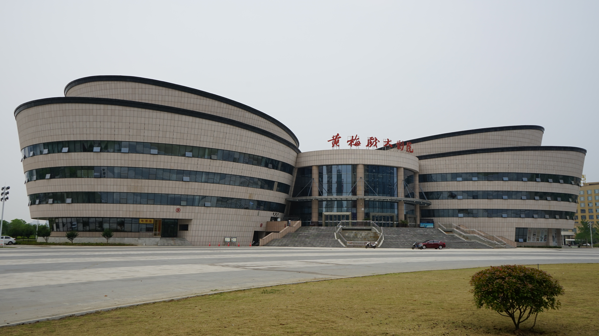

文件：huangmei-stage.jpg；本地未修改。
12段可选文字、4张图片、9个资料与图片来源链接。先选文字，再选择图片；复制图片时保留署名说明。
走近黄梅戏，从读懂一段介绍开始，也从留意一个人物的表情开始。本页为初次接触黄梅戏的同学整理阅读入口：先了解剧种，再认识剧目，随后结合图片观察舞台表达。你可以按照栏目顺序阅读，也可以通过页面导航直接前往感兴趣的部分。
原创导语，可改写
黄梅戏旧称黄梅调、采茶戏，在安徽安庆、湖北黄梅等地区流传。它的发展涉及地方曲调与民间艺术的交流融合，演唱和念白与安庆方言联系密切。制作介绍页时，可以从剧种名称、流传地区、语言特点三个角度组织内容，避免把复杂的发展过程写成单一的起源结论。
据非遗网安庆条目简述，末句为写作建议
黄梅戏通过歌唱、说白和舞台动作共同表达人物情感，其表演具有贴近生活的特点。欣赏时不必只寻找高难度动作，也可以关注一句话的语气、人物之间的回应，以及演员如何用停顿和动作交代情境。这些观察有助于把听到的声音与看到的表演联系起来。
事实概括据非遗网；观察方法为原创建议
《天仙配》《女驸马》《打猪草》《夫妻观灯》《牛郎织女》《纺棉纱》均可作为查阅黄梅戏资料的剧目入口。网页中可选取三个名称制作无序列表，再在其中一个剧目下列出自己的欣赏问题。不同演出版本可能有所差异，介绍具体片段时应注明所看的版本。
剧名据非遗网安庆条目；后两句为原创建议
安庆师范大学曾报道，学校大学生青春版黄梅戏《女驸马》参加中国（安庆）黄梅戏艺术节优秀剧目展演。这个案例可以作为介绍页中的校园阅读链接，让同学从身边的文化实践出发了解戏曲。引用报道时要保留原文日期，不应把历史活动改写为正在报名或即将举行的活动。
据安庆师范大学报道概括；后两句为原创建议
先观察照片中有几位人物，他们面向哪里，手势和站位是否形成呼应；再留意服装、道具与舞台背景。图片能提供观看线索，但通常不足以确定整个剧情。没有可靠说明时，图注可以写“黄梅戏演出场景”，不要仅凭外观猜出演员姓名、角色或演出地点。
原创观察与写作建议
剧场照片可以补充介绍页的空间感。将演出人物图与建筑外观图分别放在不同栏目，可以让读者理解“舞台上发生什么”和“演出在哪里进行”是两个不同的问题。引用旧照片时请保留拍摄年份；图片展示的是拍摄时的景象，并不保证场馆目前的外观或开放安排相同。
原创说明；照片信息以来源清单为准
可以先查阅剧目简介，确认人物关系；随后选择一个较短片段，完整观看一次，再回看自己感兴趣的部分。第二次观看时只关注一个问题，例如语气怎样变化、动作怎样回应情节。最后用两三句话记录感受，区分片段中可以直接观察到的内容和需要进一步查证的信息。
原创学习建议，可用于有序列表
讨论时可以先描述具体看到了什么，再说明自己的理解。例如，先说人物转身、停顿或看向同伴，再讨论这些动作可能表达的情绪。不同同学的理解不必完全相同，但应回到片段本身寻找依据。对不确定的专业术语，可以暂时记录问题，再通过可靠资料核对。
原创学习建议
图片不只是填满页面的装饰。适当的图注可以交代照片主题、作者和来源；替代文本则应简洁描述图中与当前内容有关的信息。当图片无法加载或读者使用读屏工具时，替代文本仍能帮助理解页面。请避免把文件名、网址或“这是一张图片”当作主要描述。
原创网页写作建议
链接文字应让读者在点击之前知道目标，例如“阅读黄梅戏项目介绍”比“点击这里”更清楚。页面内部链接可以帮助读者跳到代表剧目或图片欣赏栏目；外部链接则用于查阅原始资料。整理者应逐个检查链接目标，避免把图片下载地址误当作文化资料正文。
原创网页写作建议
完成介绍页后，我会再次检查标题层级、段落边界、列表结构和图片路径。对照浏览器中的实际结果，我可以说明一个标签为何适合某段内容，也可以说明一处超链接将读者带到哪里。最后，我会保留资料来源与修改记录，使页面内容能够被理解、被核对，也便于以后继续完善。
第一人称示范文本，须按本人实际完成情况改写

<!-- 从素材库/images中选择图片，复制到自己项目的images文件夹 -->
<h1 id="top">走近黄梅戏</h1>
<p><a href="#plays">代表剧目</a> | <a href="#gallery">图片欣赏</a></p>
<h2 id="plays">代表剧目</h2>
<p><a href="https://www.ihchina.cn/art/detail/id/13280.html">阅读黄梅戏项目介绍</a></p>
<h2 id="gallery">图片欣赏</h2>
<figure>
<img src="images/huangmei-stage.jpg" alt="黄梅戏演出中的戏装人物" width="360">
<figcaption>黄梅戏演出人物。摄影：Lavastyle；
<a href="https://commons.wikimedia.org/wiki/File:HuangmeiOpera.jpg">图片来源</a>；
<a href="https://creativecommons.org/licenses/by-sa/2.0/">CC BY-SA 2.0</a>；本地未修改。
</figcaption>
</figure>
<p><a href="#top">返回顶部</a></p>
<!-- 加入styles.css：img { max-width: 100%; height: auto; } -->